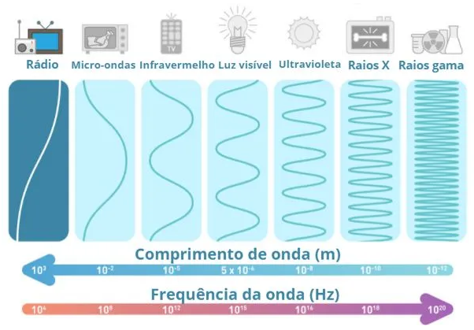
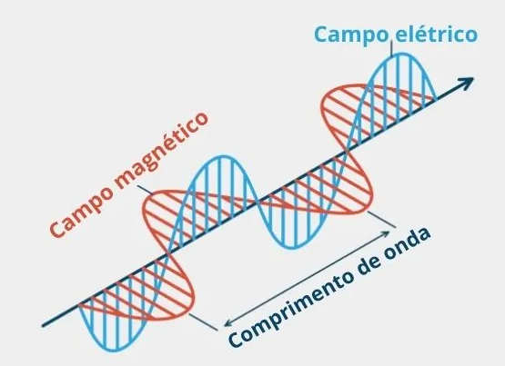

◉ Ondas de rádio
As ondas de rádio são uma forma de radiação eletromagnética, que não transporta matéria,
mas transporta energia. Essa radiação é conhecida como não ionizante, pois possui baixa frequência,
alto comprimento de onda e não interage com a matéria de forma prejudicial.
Essas ondas são utilizadas nas telecomunicações em grande parte, e as formas mais comuns de encontrá-las são em AM
(amplitude modulada), que varia a amplitude e possui baixo alcance, e em FM (frequência modulada), que varia a
frequência e possui alto alcance.
➤ Como qualquer onda eletromagnética, possui as seguintes características:
• amplitude (A)
• comprimento de onda (λ)
• frequência (f)
• velocidade (v)
Sendo que, para encontrar a velocidade da onda, basta utilizar a equação: V = f . λ.
➤ Resumo sobre as ondas de rádio
• Ondas de rádio são uma radiação eletromagnética.
• Ondas de rádio são não ionizantes e não afetam a saúde humana.
• Existem diversos tipos de onda de rádio, sendo as mais comuns: AM (amplitude modulada) e FM (frequência modulada).
• O uso das ondas de rádio é focado nas telecomunicações, e elas podem ser utilizadas em gps e radares devido a sua
natureza eletromagnética.
• As características da onda eletromagnética são: amplitude (A), comprimento de onda (λ), frequência (f) e velocidade
(v).
➤ O que são ondas de rádio?
A onda de rádio é um tipo de onda eletromagnética, uma radiação. Essas ondas não transportam matéria, mas
transportam energia e não precisam de um meio para se propagar.
Existem sete tipos de ondas eletromagnéticas:
• onda de rádio
• micro-ondas
• infravermelho
• luz visível
• ultravioleta
• raio X
• raio gama
Variando suas frequências e seus comprimentos de onda, é possível determinar o espectro eletromagnético.

➤ Principais características das ondas de rádio
A onda de rádio possui a menor frequência de onda do espectro eletromagnético, na faixa de 10.000 Hz, assim,
transporta pouca energia e, por consequência, possui o maior comprimento de onda, na faixa do 1000 m.

Como qualquer onda eletromagnética, a onda de rádio possui: amplitude (A), comprimento de onda (λ), frequência
(f) e velocidade (v).
Para encontrar sua velocidade, frequência ou comprimento de onda, basta utilizar a equação da velocidade da onda:
V = f . λ
V→ velocidade da onda (m/s)
F→ frequência da onda (Hz)
λ→ comprimento de onda (m)
➤ Uso das ondas de rádio
As aplicações das ondas de rádio são amplas devido a sua natureza eletromagnética. Como podem se propagar no vácuo,
seu uso vai de rádios e televisões até GPS e radares.
As ondas são produzidas à medida que cargas elétricas são aceleradas no interior de transmissores, e, devido ao
seu amplo uso, é necessário um controle para que sua radiação não cause interferência em outros equipamentos.
➤ Ondas de rádio AM e FM
As transmissões das ondas de rádio, dependendo de suas características, podem ser classificadas de diversos tipos.
Os mais populares são:
• AM (amplitude modulada)
• FM (frequência modulada)
As ondas AM variam sua amplitude durante sua propagação. Esse tipo de onda é mais barato se comparado à FM. As
ondas FM propagam-se alterando sua frequência (entre 80 MHz e 100 MHz), e assim possuem um alcance melhor.
◉ Funcionamento de uma antena
As antenas podem ser usadas tanto para emitir quanto para receber sinais eletromagnéticos.
Mas como se dá esse processo?
Uma corrente elétrica alternada é produzida no transmissor e esse tipo de corrente tem sua intensidade variando
em função do tempo, de acordo com a função trigonométrica seno, a essa variação associamos uma grandeza chamada
frequência, que é medida em hertz. A corrente então oscila ao longo de um condutor e essa oscilação vai produzir
um campo eletromagnético, ou seja, vai produzir ondas eletromagnéticas. As ondas eletromagnéticas produzidas
são emitidas e viajam através do espaço em todas as direções, como o espaço está repleto de ondas eletromagnéticas
vindas de diversas fontes, e como são ondas, elas possuem frequência e comprimento de onda. É exatamente essas
duas grandezas que vão diferenciar uma da outra.
Cada onda tem sua própria frequência, quanto maior o valor da frequência, menor será o comprimento de onda. Logo,
quanto maior o comprimento de onda, menor será a frequência da onda. Essas ondas chegam a uma infinidade de
antenas receptadoras espalhadas pelas cidades, mas cada antena irá captar apenas as ondas que estão na faixa
de frequência programada. Ao chegar na antena receptora, a onda irá induzir uma corrente alternada que oscilará
com uma frequência igual a sua. Apesar dessa corrente ser bem mais fraca do que a corrente que gerou a onda na
antena transmissora, ela pode ser amplificada no aparelho receptor.
◉ O Sistema MIMO
Dados teóricos da técnica MIMO mostram ganhos na taxa de transferência de DL (Downlink) ou UL (Uplink) da
ordem de duas vezes em relação ao uso da técnica SISO, dependendo diretamente da relação sinal ruído.
Será mostrado neste trabalho como se comportam os principais indicadores de desempenho em medições práticas
efetuadas em campo, num ambiente indoor de média densidade de tráfego.
O uso das técnicas MIMO vai além de ganhos proporcionados no domínio do tempo e da frequência, pois além de
ajudar a superar as deficiências do canal sem fio, traz ganhos de dimensão espacial, estas ocasionadas pelo
uso de múltiplas antenas utilizadas no receptor no transmissor.
A diversidade espacial propiciada pelo uso das técnicas MIMO traz a possibilidade de uma utilização mais agressiva
de reuso de frequência, garantindo um ganho de capacidade à rede celular envolvida.
O diagrama básico de funcionamento de um sistema MIMO é basicamente composto de cinco ações, que são as etapas de
codificação, entrelaçamento, mapeamento de símbolos, codificação espaço-temporal e transmissão do sinal.
Na recepção é feito o processo reverso.
Os principais benefícios do uso do MIMO são ganho de arranjo, ganho por diversidade espacial, ganho de
multiplexação espacial e redução de interferência.
➤ Ganho de Arranjo
O ganho de arranjo é um incremento na relação sinal-ruído (SNR) ocasionado pelo efeito da combinação
coerente na recepção dos sinais que chegam ao receptor.